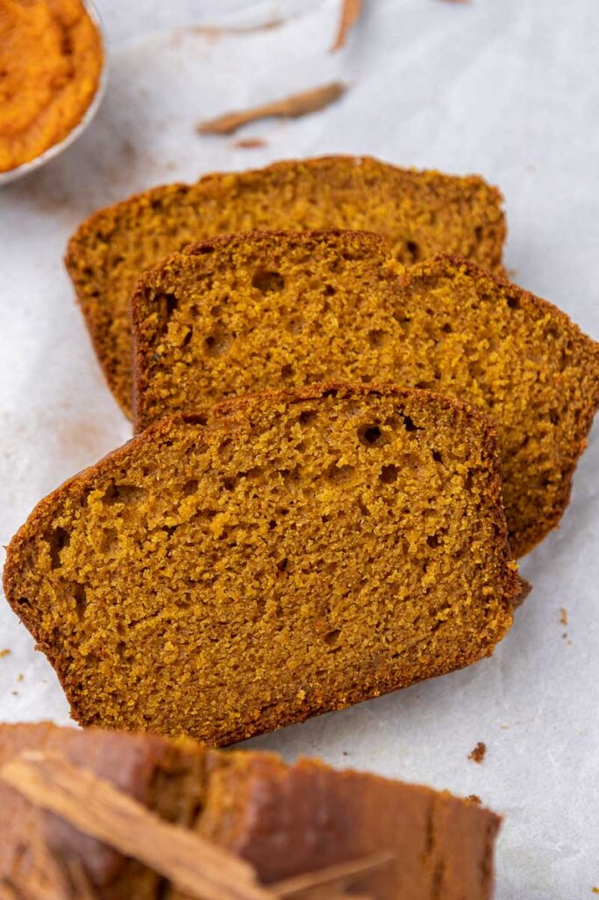

Easy Pumpkin Bread

This easy pumpkin bread recipe is a fall recipe favorite, packed with cinnamon spice and loads of pumpkin flavor. Perfectly tender and moist, like any quick bread recipe should be, this makes for a great Thanksgiving breakfast.
Ingredients
- Egg-Your eggs will need to be at room temperature to keep the bread moist and help it rise.
- Granulated & Brown Sugar-Gives it the right level of sweetness and the molasses in the brown sugar gives a caramel flavor to the bread which makes it extra delicious.
- Pumpkin Puree-Be sure to buy puree, not canned pumpkin pie filling. They are not the same thing and you don’t want a recipe to fail because of something so simple!
- Sour Cream-Used at room temperature, the sour cream helps give the bread its moisture.
- Vanilla Extract-Delivers a subtle vanilla flavor to the loaf.
- Butter-Use a good quality unsalted variety.
- All-purpose flour-To get a recipe as close to the one I am sharing here, try using a kitchen scale and weigh your flour.
- Salt-Always use a little salt to balance out the sweetness of my baked goods.
- Baking Powder-The baking powder will add some leavening to the bread.
- Cinnamon, allspice, nutmeg, and ginger-These spices will help deliver that fall flavor.
Steps
- Mix together the eggs, sugars, pumpkin puree, sour cream, vanilla, and butter.
- Mix the flour, salt, baking powder, and spices together in a separate bowl.
- Combine the wet and dry mixtures.
- Pour the pumpkin batter into a loaf pan.
- Bake the loaf and allow it to cool before enjoying it!